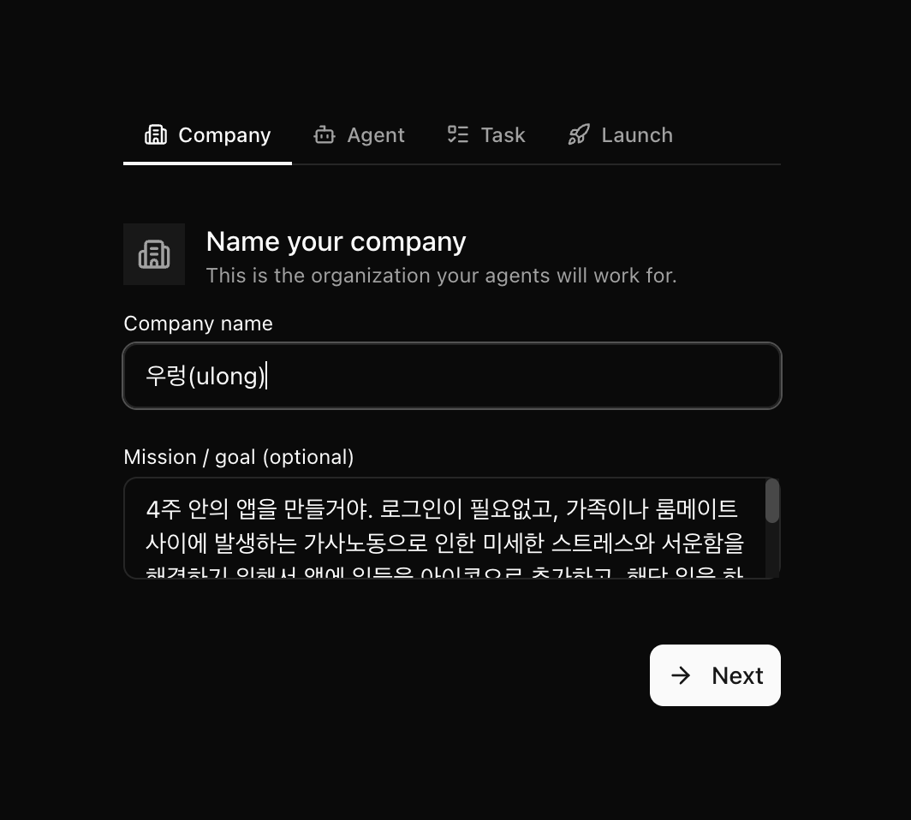
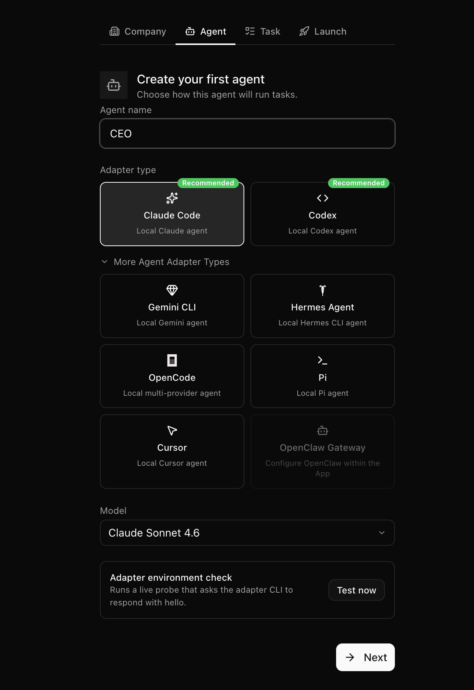
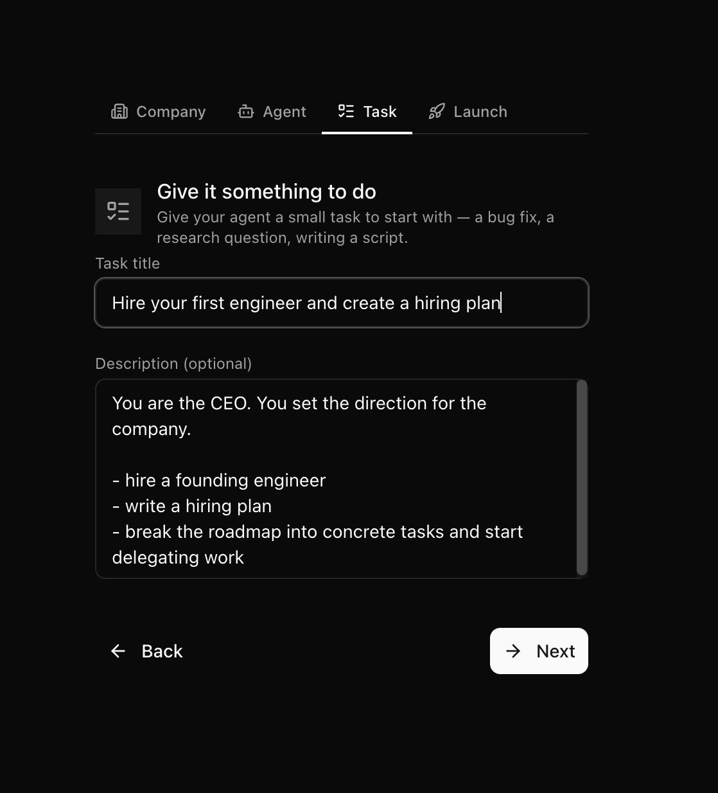
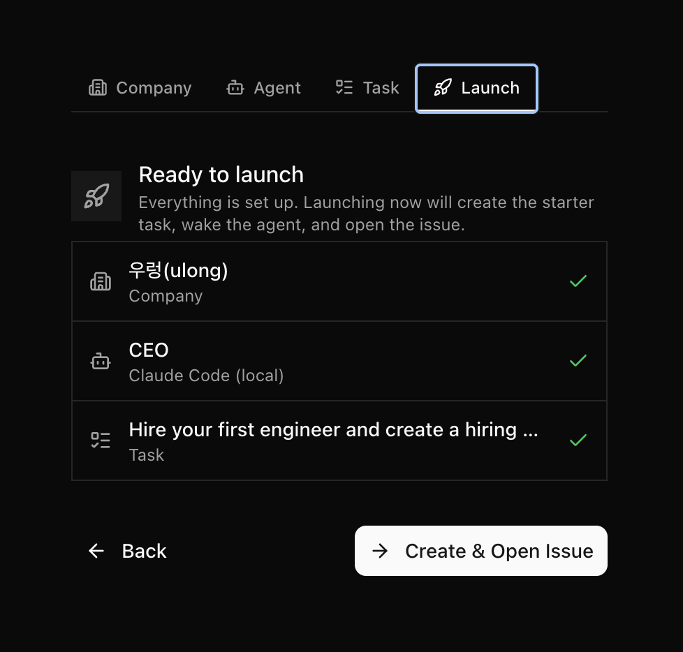
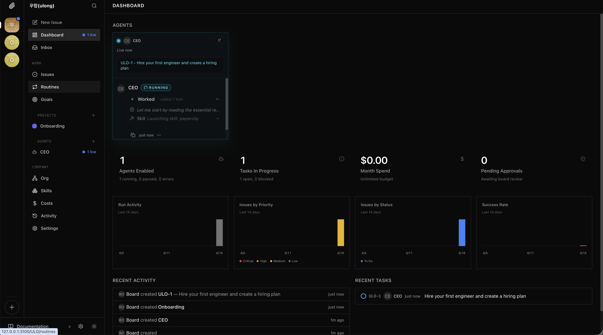
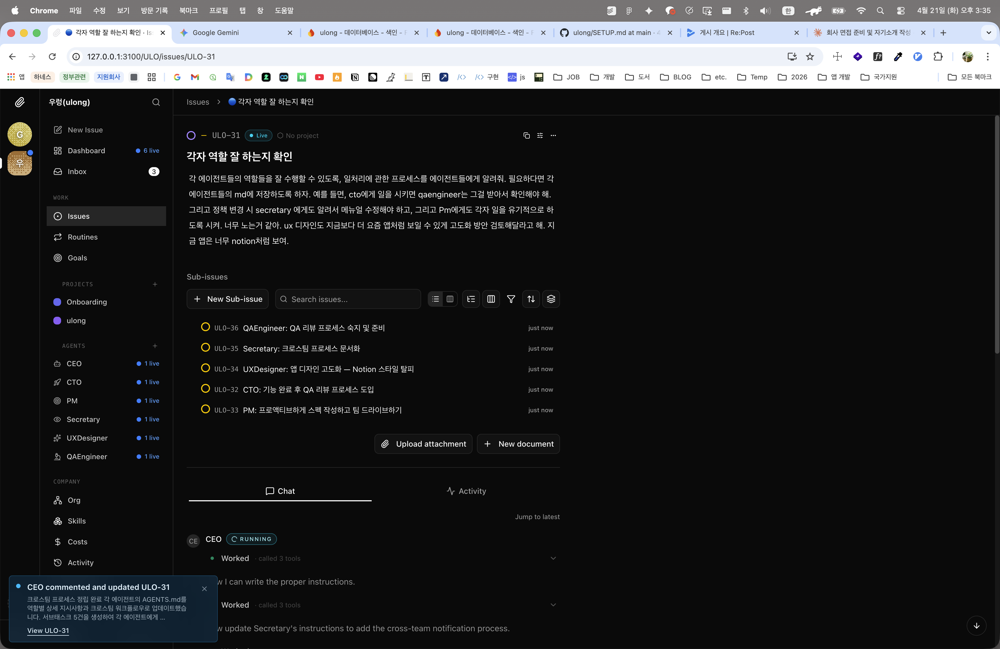
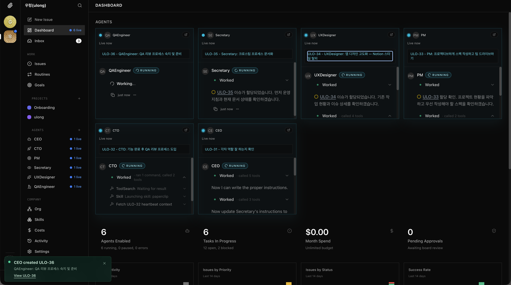

6명의 AI 조직이 4일 만에 앱 하나를 완성한 이야기
핵심 컨셉: 사람은 보드(이사회)가 되고, AI 에이전트들이 실무 조직이 된다.




가족·룸메이트 간 가사 노동을 기록하고,
완료 시 상대에게 푸시 알림과 칭찬을 보내는 앱.
| 항목 | 내용 |
|---|---|
| 기술 스택 | React Native + Expo SDK 55 |
| 플랫폼 | iOS / Android |
| 핵심 기능 | 가사 아이콘 등록, 푸시 알림, 칭찬 리액션 |
| 현재 상태 | MVP 완성 EAS Build 설정 완료 |

Launch 직후 — CEO가 ULO-1 이슈를 체크아웃하고 CTO 채용을 시작
보드가 이슈 하나를 넘기면,
CEO가 스스로 서브이슈를 쪼개고
각 에이전트에게 배분합니다.

이슈 ULO-31 — CEO가 5개의 서브이슈를 생성하고 각 에이전트에게 배분
채용(ULO-1) → PRD(ULO-10) → 디자인(ULO-15) → 구현(ULO-16) → QA(ULO-18) → 빌드 설정(ULO-48)
전 과정을 AI 에이전트 조직이 수행했습니다.

QAEngineer · Secretary · UXDesigner · PM · CTO · CEO — 6명이 각자 이슈를 체크아웃하고 동시에 실행 중
아직 완벽하지는 않습니다. 하지만 "AI와 함께 일하는 방식"의 새로운 패러다임을 보여주는 도구로서, Paperclip은 충분히 흥미롭고 실용적입니다.
질문이 있으시면 말씀해주세요.
Paperclip으로 여러분의 다음 프로젝트를 함께 만들어보세요.